Swedes Online: You Are More Tracked Than You Think
Originally presented by Joel Purra as his master's thesis defense, 2015-02-19 at Linköping University in Sweden. A video recording is also available.
Change slide by swiping or using the ← → direction buttons on your keyboard. Press s to toogle showing short slide notes in a separate tab.
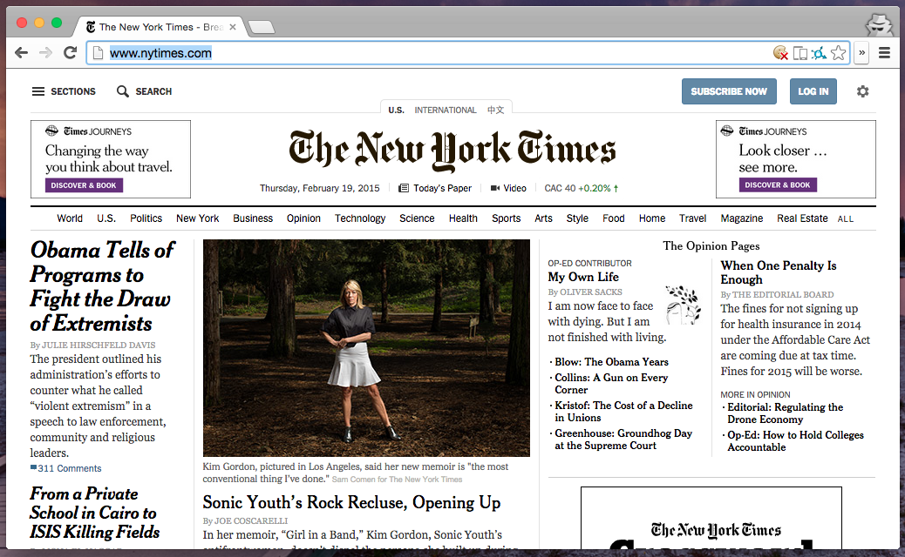
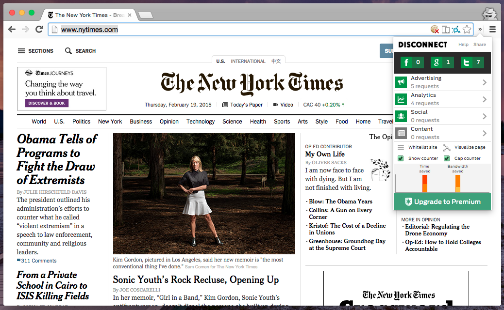
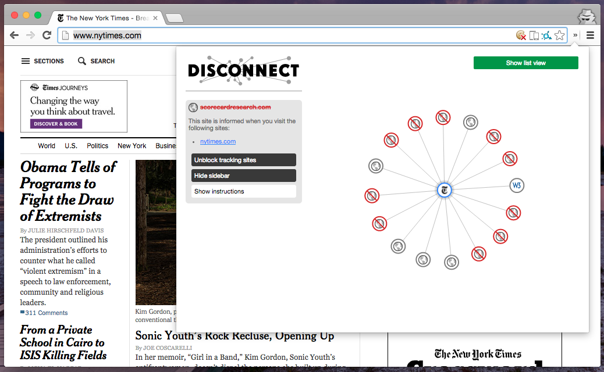
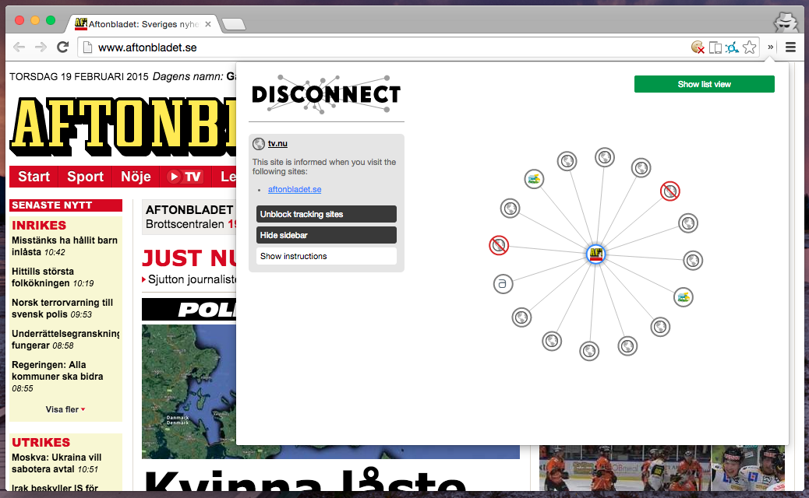
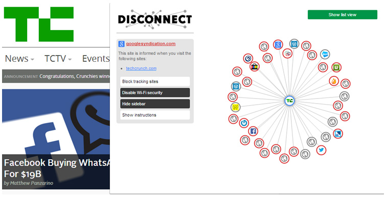
What is tracking?
When browsing online, information is recorded by the servers you communicate directly with. When visiting a website, resources from other services might be requested as well -- with or without being visible.
Assumption: all third-party resources have server logs and/or analytics software to record your online habits.
- Each third-party resource leaks at least some user information.
- Information can be passively recorded during transmission; some of which can't be avoided.
- Specialized tracking code can actively extract extended information.
What does this thesis show?
By downloading websites from over 150.000 domains, it is shown how common third-party resource usage is.
Domain classes: Random, top and curated. Focus is on Sweden.
Randomly selected domains
- 100.000 .se
- 10.000 .dk
- 10.000 .com
- 10.000 .net
From Alexa's global top 1.000.000
- 10.000 in the very top
- 10.000 randomly selected
- 3.400 .se
- 2.600 .dk
Important in Sweden
- Counties, municipalities, public authorities, and higher education
- Financial services, government-owned corporations, media
- Domain registrars, ISPs
Reach50's top list
- 50 most popular domains in Sweden
What are third-party resources?
A resource belonging to the origin's primary domain is called internal. Otherwise it's an external resource.
Assumption: any external resource is a third-party resource.
Domain examples
- example.se (primary domain)
- www.example.se (subdomain)
- example.org (third-party domain)
- doubleclick.net (known tracker domain)
Resource examples
- Branded (videos, services, images)
- Unbranded (fonts, useful scripts, images)
- Ads (scripts, images, flash)
- Web beacons (hidden images, analytics scripts)
What is passive tracking?
Collecting information that is required to retrieve the resource as part of the HTTP standard, or inferrable from observing network traffic.
- Where in the world the user is, often down to street level. Which ISP.
- Timestamps; if the domain has been requested before and how often.
Anyone can listen in anywhere along the network path, unless HTTPS is used. HTTPS prevents passive tracking of the following:
- Exactly which page is visited.
- The browser's make/model/version, operating system, computer/pad/phone.
- Selected browser language, some settings.
- If this page, or any other page, loading the same resource has been visited before (using for example cookies, Etags, resource timestamps).
What is active tracking?
A script or plugin executed in the browser to extract and collect extended information. Can already collect all of the passive properties by default, even when using HTTPS.
- Time spent on each page, even if inactive.
- Window size, screen resolution, color depth.
- Mouse movements, scrollbar location.
- Installed fonts, plugins and extensions.
- Error reporting if problems occur.
Why is tracking used?
Information is collected and stored to gain knowledge about the visitors a website has. The purpose differs depending on the perspective.
- Website owners: to improve content (what is interesting).
- Social networks: to improve user and network knowledge (interests).
- Advertisment firms: to sell more targeted ads (based on interests).
- Media analytics firms: to verify statistics (for advertisements).
- Data brokers: to package and sell user data (inferred from interests).
On to results
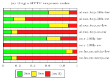
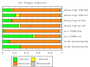
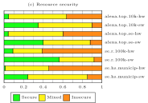
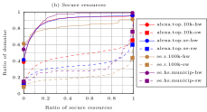
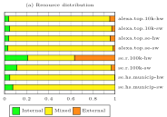
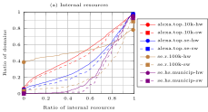
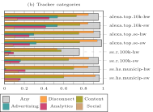
Domains per organization
Distribution of domains per organization in the Disconnect.me blocking list.
521 out of 980 organization have 1 domain, 331 have 2 domain.
Google has 271, Yahoo 71, AOL 40, Microsoft 32.
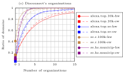
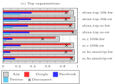
Why is tracking bad?
- Users lose control over who they share information with. This can be considered an invasion of privacy.
- Information is easily stored and easily retrieved, which means anything done online in the past can haunt you for ever.
- What is illegal for governments, companies are allowed to do, through user agreements. Governments still have control over companies within their jurisdiction.
- Displaying targeted ads isn't usually considered harmful. It's the transfer of information to other companies that is bad.
What can tracking lead to?
- Data being aggregated and sold to potential customers, either in bulk or per individual:
- Companies, for directed ads.
- Banks, as part of a financial background check.
- Insurance companies, as part of a medical background checks.
- Future employers, as part of the hiring process background check.
- Aggregated data leaking to your friends -- and enemies.
- Self-censorship, effectively limiting freedom of speech.
- The full scope of the tracking is still unknown:
- Could become a historical thought police.
- Could mean online companies have a grip on all current and future politicians, company leaders and celebrities.
- Could mean "offline individuals" get a privacy advantage.
Thank you!
Thesis supervision: Niklas Carlsson, Associate Professor, IDA. Patrik Wallström, Project Manager within R&D, .SE. Staffan Hagnell, Head of New Businesses, .SE. Anton Nilsson, opponent. Thank you!
Domains, data and software: .SE (Richard Isberg, Tobbe Carlsson, Anne-Marie Eklund-Löwinder, Erika Lund), DK Hostmaster A/S (Steen Vincentz Jensen, Lise Fuhr), Reach50/Webmie (Mika Wenell, Jyry Suvilehto), Alexa, Verisign. Disconnect.me, Mozilla. PhantomJS, jq, GNU Parallel, LyX. Thank you!
Tips, feedback, inspiration and help: Dwight Hunter, Peter Forsman, Linus Nordberg, Pamela Davidsson, Lennart Bonnevier, Isabelle Edlund, Amar Andersson, Per-Ola Mjömark, Elisabeth Nilsson, Mats Dufberg, Ana Rodriguez Garcia, Stanley Greenstein, Markus Bylund. Thank you!
And of course everyone I forgot to mention – sorry and thank you!
More!
- joelpurra.com/r/masters
- joelpurra.com/r/masters/report
- ISRN: LIU-IDA/LITH-EX-A--15/007--SE
Open source
- har-heedless: Scriptable batch downloading of webpages to generate HTTP Archive (HAR) files, using PhantomJS.
- har-dulcify: Extract data from HTTP Archive (HAR) files, quite possibly downloaded by har-heedless, for some aggregate analysis.
- har-portent: Using har-heedless to download and har-dulcify to analyze web pages in aggregate.
Open datasets
- Alexa top 10.000
- Alexa random 10.000
- Alexa top .se
- Alexa top .dk
Other findings
There are at least as many external resources, meaning as much tracking, on secure as insecure top domains (Figure 4.3(a))
Swedish top/curated domain findings
Swedish media seems very social, with the highest Twitter and Facebook coverage (C.11.4)
Other findings
50% of top sites always redirect to the www subdomain, 13% always redirect to their primary domain (C.8)
Random .se domain findings
58% use content from known trackers (C.11.3)
Swedish top/curated domain findings
Over 90% of most categories' domains rely on external resources – external resources are considered trackers (C.4)
Random .se domain findings
Uses more external resources than .dk, but less than .com and .net (C.4)
Other findings
A few global top domains load more than 75 known trackers on their front page alone (C.11.1)
Random .se domain findings
Disconnect only detects 3% of external primary domains as trackers (4.3.4)
Other findings
Disconnect's blocking list only detects 10% of external primary domains as trackers for top website datasets (4.3.4)
Other findings
Twitter has about half the coverage of Facebook (C.11.4)
Swedish top/curated domain findings
A single visit to each media sites would leak information to at least 57 organizations (C.11.1)
Other findings
78% of 123,000 HTTP-www variation domains call external domains (C.5)
Random .se domain findings
Many random domains use only external resources due to being parked 4.2 or redirecting away from the origin domain (C.8)
Swedish top/curated domain findings
25% of Swedish municipalities responding to secure requests load 90% of their resources securely – it's close, but still considered insecure (Figure 4.3(b))
Swedish top/curated domain findings
Financial instititions redirect from secure to insecure sites for 20% of responding domains (C.8)
Other findings
94% of 5,959 HTTPS-www variation domains call external domains (C.5)
Swedish top/curated domain findings
70% use content from known trackers (C.11.3)
Random .se domain findings
39% use only external resources (Figure 4.2(a))
Random .se domain findings
Over 40% use Google Analytics or Google API (C.11.2)
Swedish top/curated domain findings
Only 13 of 290 municipalities have fully secure websites; no Swedish media sites are completely secure (C.7)
Random .se domain findings
Only 0.3% respond to secure requests, in line with .dk and .net, while .com has 0.5-0.6% response rate (C.2)